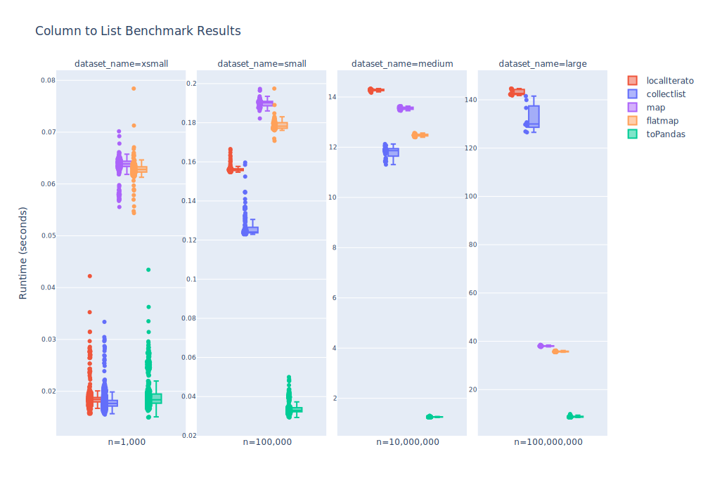
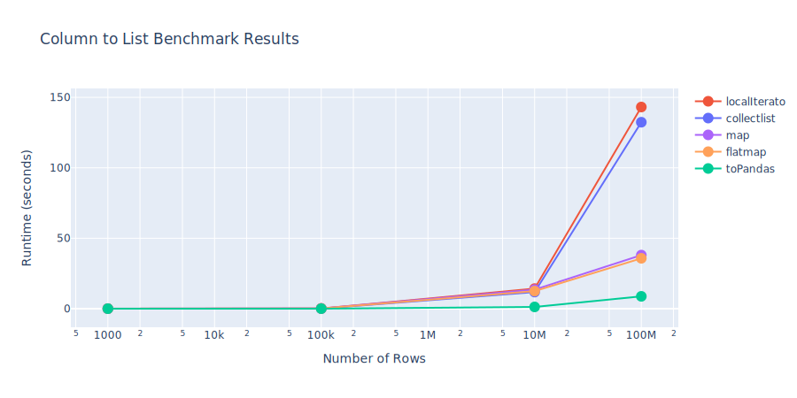

Column to list performance
In PySpark, there are many approaches to accomplish the same task. Given a test DataFrame containing two columns - mvv and count, here are five methods to produce an identical list of mvv values using base PySpark functionality.
Setup
import pyspark.sql.functions as F
from pyspark.sql import SparkSession
spark = SparkSession.builder.getOrCreate()
vals = [(0, 5), (1, 10), (2, 4), (3, 2), (4, 1)]
df = spark.createDataFrame(count_vals, schema="mvv int, count int")
Approaches
1. toPandas()
list(df.select("mvv").toPandas()["mvv"])
# [0, 1, 2, 3, 4]
2. flatMap
df.select("mvv").rdd.flatMap(lambda x: x).collect()
# [0, 1, 2, 3, 4]
3. map
df.select("mvv").rdd.map(lambda row: row[0]).collect()
# [0, 1, 2, 3, 4]
4. collect list comprehension
[row[0] for row in df.select("mvv").collect()]
# [0, 1, 2, 3, 4]
5. toLocalIterator() list comprehension
[row[0] for row in df.select("mvv").toLocalIterator()]
# [0, 1, 2, 3, 4]
Benchmark Results
Substantial runtime differences were observed on the medium and large datasets:


All approaches have similar performance at 1K and 100k rows. toPandas() is consistently the fastest method across the tested dataset sizes, and exhibits the least variance in runtime. However, pyarrow and pandas are not required dependencies of Quinn so this method will only work with those packages available. For typical spark workloads, the flatMap approach is the next best option to use by default.
Quinn Implementation
To address these performance results, we updated quinn.column_to_list() to check the runtime environment and use the fastest method. If pandas and pyarrow are available, toPandas() is used. Otherwise, flatmap is used.
More Information
Datasets
Four datasets were used for this benchmark. Each dataset contains two columns - mvv and index. The mvv column is a monotonically increasing integer and the count column is a random integer between 1 and 10. The datasets were created using the create_benchmark_df.py script in quinn/benchmarks
| Dataset name | Number of rows | Number of files | Size on disk (mb) |
|---|---|---|---|
| mvv_xsmall | 1,000 | 1 | 0.005 |
| mvv_small | 100,000 | 1 | 0.45 |
| mvv_medium | 10,000,000 | 1 | 45 |
| mvv_large | 100,000,000 | 4 | 566 |
Validation
The code and results from this test are available in the /benchmarks directory of Quinn. To run this benchmark yourself:
1. install the required dependencies
poetry install --with docs
2. create the datasets
poetry run python benchmarks/create_benchmark_df.py
3. run the benchmark
poetry run python benchmarks/benchmark_column_performance.py
Results will be stored in the benchmarks/results directory.
By default each implementation will run for the following durations:
| Dataset name | Duration (seconds) |
|---|---|
| mvv_xsmall | 20 |
| mvv_small | 20 |
| mvv_medium | 360 |
| mvv_large | 1200 |
These can be adjusted in benchmarks/benchmark_column_performance.py if a shorter or longer duration is desired.
4. Visualize the results
poetry run python benchmarks/visualize_benchmarks.py
.svg files will be saved in the benchmarks/images directory.